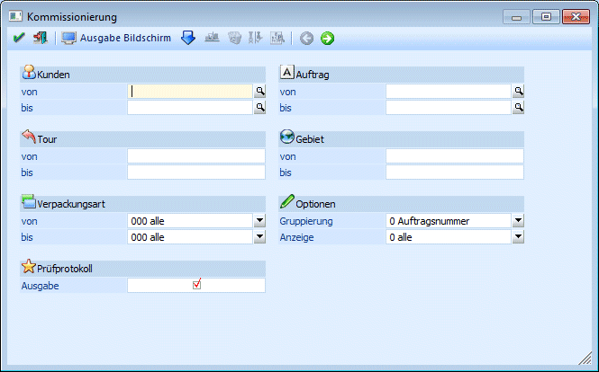
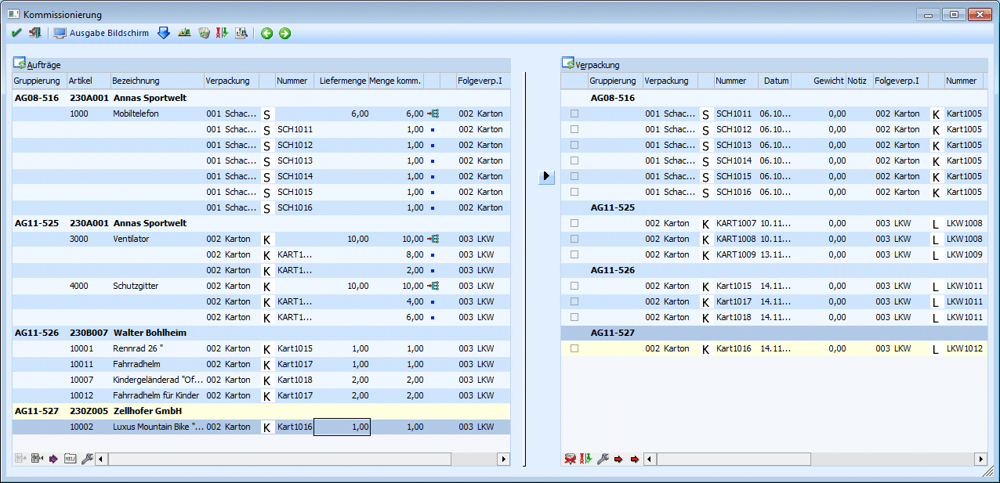
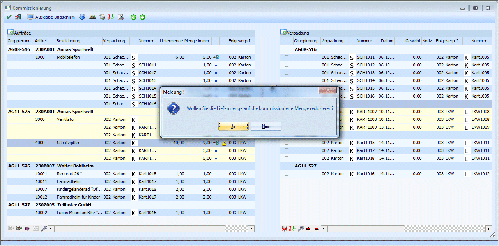
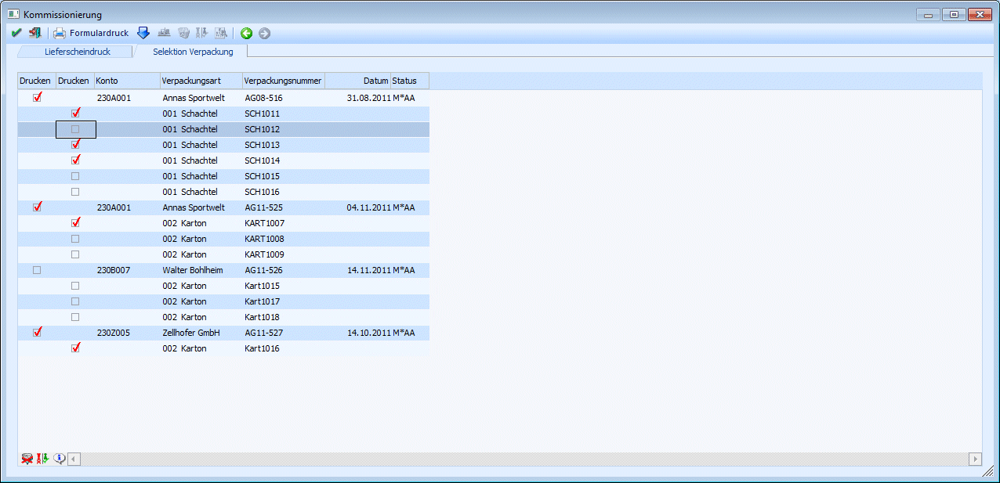

Über den Menüpunkt…
1 WinLine FAKT
1 Erfassen
1 Kundenbestellungen
1 Kommissionierung
… können Verpackungen zu Aufträgen erfasst werden.

Schritt 1
Im 1. Schritt können die Belege selektiert werden. Man kann dabei auf bestimmte Kunden, Touren, Verpackungsarten, Aufträge und Gebiete einschränken.
Optionen
Ø Gruppierung
Es kann nach Auftrag, Kunde, Tour und Lieferadresse gruppiert werden. Die Gruppierung bestimmt, nach welchem Kriterium die Lieferungen zu Verpackungen zusammengefasst werden.
Ø Anzeige
Es können alle, nur vollständig kommissionierte oder nur teilweise kommissionierte Aufträge angezeigt werden. Voraussetzung dafür ist, dass die Aufträge zuvor über das "Kundenbestellungen bearbeiten", aufbereitet wurden.
Prüfprotokoll
Ø Ausgabe
Ist diese Checkbox aktiviert, wird ein Prüfprotokoll ausgegeben. Auf diesem Prüfprotokoll werden alle Aufträge angezeigt, die im "Kundenbestellungen bearbeiten" vorbereitet wurden, aber nicht in der Kommissionierung angezeigt werden können, weil keine Versandart, keine Colli oder auch keine Verpackung hinterlegt wurde.
Mittels "Vor"- Button gelangt man in den nächsten Schritt.
Schritt 2

In der Tabelle "Aufträge" werden die Aufträge angezeigt und in der Tabelle Verpackung die dazugehörigen Verpackungen.
Buttons
Ø Verpackungsvorschlag erstellen
Durch Anklicken des "Verpackungsvorschlag erstellen" Buttons erhält jede Verpackung der rechten Tabelle eine neue Nummer, wobei der Nummernkreis aus dem Verpackungsstamm hoch gezählt wird. Diese Nummer wird den zugehörigen Artikeln in der linken Tabelle zugewiesen.
Ø  Löschen
Löschen
Es werden alle gespeicherten Verpackungen gelöscht, die Zuweisungen von Aufträgen zu Verpackungen entfernt und die bereits gebuchte Kommissionierungsmenge im Artikelstamm reduziert.
Ø Wiederherstellen
Alle noch nicht gespeicherten Änderungen werden verworfen und die gespeicherten Kommissionierungen wiederhergestellt.
Ø Prüfen
Mittels "Prüfen" Button wird jede Zeile geprüft, ob eine Über- oder Unterkommissionierung eingegeben wurde. Eine Überkommissionierung ist nicht erlaubt und wird mit einem roten X gekennzeichnet.
Eine Unterkommissionierung ist möglich, allerdings kann der Lieferschein im Folgeschritt nicht automatisch gedruckt werden. Eine Unterkommissionierung wird mit einem gelben Rufzeichen markiert. Mittels Doppelklick auf die Warnung, kann die Liefermenge auf die kommissionierte Menge reduziert werden.

Ø 
 Zurück/Vor
Zurück/Vor
Mittels Zurück-Button gelangt man in den vorherigen Schritt; mit dem "Vor"-Button kann man in den nächsten Schritt wechseln.
Ø Ausgabe Bildschirm/Drucker
Ausgabe des Kommissionierungsprotokolls am Bildschirm oder Drucker
Ø  OK
OK
Durch Drücken des OK-Buttons werden die Verpackungen gespeichert. Zusätzlich wird für jeden Artikel eine neue Artikeljournalzeile (Buchungsschlüssel K) geschrieben. Im Artikelstamm wird das Feld "Menge kommissioniert" (in dem die Summe aller Kommissionierungen angezeigt wird) aktualisiert.
Ø  Ende
Ende
Mit dem Ende-Button wird der Menüpunkt geschlossen.
Buttons der Tabellen
Ø Zuweisung
Die Zuweisung der Auftragszeilen zu Verpackungen kann mittels dieses Buttons oder mittels Drag & Drop erfolgen.
Ø  Zeilen entfernen
Zeilen entfernen
Um Zeilen aus der Tabelle zu entfernen, kann dieser Button verwendet werden.
Ø Zeilen einfügen
Falls eine Artikelzeile in mehrere Verpackungen verpackt werden muss, kann die Artikelzeile gesplittet werden. Die Zeile wird dann geteilt, sodass es eine Hauptzeile und mindestens 2 Verpackungszeilen gibt.
Ø nächste Fehlerzeile
Mit diesem Button kann jeweils in die nächste Fehlerzeile gewechselt werden.
Ø Verpackungen einfügen
Wurden Zeilen eingefügt, so kann mittels Verpackungen einfügen der nächste freie Karton ausgewählt werden.
Ø Gewicht bei Mengenänderung neu berechnen
Button unterhalb der linken Tabelle. Dieser kann ein-/ ausgeschaltet werden. Ist der Button aktiviert, wird bei jeder Änderung der kommissionierten Menge das Gewicht aller zu diesem Auftrag zugehörigen Verpackungen neu berechnet.
Ø  Alle Zeilen markieren
Alle Zeilen markieren
Alle Zeilen in der Tabelle werden selektiert.
Ø  Selektion umkehren
Selektion umkehren
Durch Anwählen dieses Buttons werden die selektierten Datensätze deaktiviert und umgekehrt.
Ø Gewicht für selektierte Zeilen neu berechnen
Für den Fall, dass Verpackungen editiert und Artikel auf mehrere Verpackungen aufgeteilt werden, können die Gewichte neu berechnet werden. Dafür steht unterhalb der Verpackungstabelle ein Button [Gewicht für selektierte Zeilen neu berechnen].
Schritt 3
In der Kommissionierung erfolgt im letzten Schritt (Schritt 3) der Lieferscheindruck.
Es stehen zwei Register zur Verfügung: „Lieferscheindruck“ und „Selektion Verpackung“. Es wird pro Benutzer gespeichert, welches Register („Lieferscheindruck“ oder „Selektion Verpackung“) zuletzt verwendet wurde.
ü Lieferscheindruck:
Im Register
"Lieferscheindruck" werden die zuvor kommissionierten Aufträge angezeigt. Über
dieses Register erfolgt der Lieferscheindruck, wenn der Beleg vollständig
kommissioniert und ausgeliefert wurde. Und der Lieferschein alle im Schritt 2
kommissionierten Artikel enthalten soll.
ü Selektion Verpackung:
In diesem
Register werden unterhalb der Lieferscheine die dazugehörigen Verpackungen
angezeigt. Hier können neben der Selektion der Aufträge, die Verpackungen für
den Lieferscheindruck wahlweise aktiviert bzw. deaktiviert werden - ohne
dabei die Kommissionierung zu löschen. Diese Funktionalität wird verwendet, wenn
eine Teillieferung der kommissionierten Ware erfolgt. Wenn beispielsweise das
Verpackungsstück nicht mehr auf den LKW verladen werden kann, vergessen wurde
oder ähnliches. Denn damit werden diese Verpackungsstücke nicht ausgeliefert,
obwohl die Ware ausreichend im Lager vorhanden und bereits verpackt ist.
Ist im zweiten Register nur ein Teil der Verpackungen aktiviert, wird die Liefermenge für die jeweils betroffene Belegzeile entsprechend reduziert. Für diese Zeilen wird ein Umstellungsprotokoll (P02W132U) erstellt. Bei anschließendem Druck des Lieferscheins werden nur die geänderten Liefermengen abgebucht. Das Kennzeichen der Kommissionierung (K) bleibt für die verbleibende Liefermenge bestehen, siehe Artikeljournal.

Buttons
Ø OK
Durch Drücken des OK-Buttons wird der Menüpunkt "Kundenlieferscheine drucken" geöffnet, in dem alle ausgewählten Belege angezeigt werden und dort entsprechend der Druckstati als Lieferschein oder als Sammellieferschein gedruckt werden können. Wenn in der Verpackungsart ein Formular angegeben wurde, wird dieses beim Lieferscheindruck mit ausgedruckt.
Ø Ende
Mit dem Ende-Button wird der Menüpunkt geschlossen.
Ø Formulardruck
Wird dieser Button aktiviert, werden für alle Belege - die in der Tabelle selektiert sind - die Verpackungsformulare (Etiketten) gedruckt, wie sie in der Verpackungsart hinterlegt wurden.
Ø Zurück
Mittels Zurück-Button gelangt man in den vorherigen Schritt.
Ø Alle Zeilen markieren
Bei Verwendung dieser Funktion werden alle Aufträge (incl. der Verpackungen) für den Lieferscheindruck aktiviert.
Ø Selektion umkehren
Durch Anwählen dieses Buttons werden die selektierten Aufträge deaktiviert und umgekehrt.